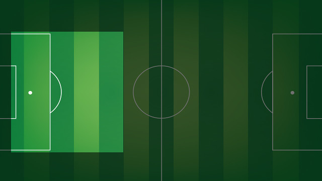

3
Gerard Piqué
DEFENDER

Gerard Piqué returned to FC Barcelona, the club where he started out as a youngster, in the summer of 2008, after three seasons with Manchester United and one on loan with Real Zaragoza.
Gerard Piqué was born on 2 February 1987 and since that day he has been a club member of FC Barcelona. Since he was very young he has been involved with the club and when he was 10 years old he joined the youngest boys' team at the club at that time (Alevín B).
From then on he passed through the various youth levels, picking up titles along the way and winning plaudits in all age categories (Alevín A, Infantil B and A, Cadete B and A and Juvenil B and A). When playing at Cadet B level Tito Vilanova was his manager, who he would coincide with again when he eventually made it into the first team. In all this time of development and learning, Gerard Piqué showed a great ability to adapt to different positions on the field and gained a reputation for goal scoring, despite his defensive position.
At the end of the 2003/04 season, Gerard Piqué took a break from his life at FC Barcelona and left for Manchester United. He made his debut for the English side on 26 October, only three weeks after arriving, in a Carling Cup match against Crewe Alexandra. He was also with Alex Ferguson's team for the 2005/06 season before being loaned out to Real Zaragoza for the 2006/07 season.
In his only season with the Aragonese side, Piqué often filled in as a defensive midfielder in front of the back four. The Catalan played 22 league games, eighteen of which he started, and scored two goals. During this time he played alongside Gabriel Milito, who he would also meet up with again on his return to Barça.
Season 2007/08 saw Piqué return to Manchester United, where he was able to celebrate the Premiership and Champions League double. He had a memorable season in the Champions League, especially in the group phase, scoring two goals.
In his first season with Barcelona, Piqué soon showed why he had been signed. He became a first choice centre back and also scored three goals, one in each competition, totalling 45 appearances. His ability to work the ball forward from the back and support attacking moves won him plenty of admirers. His goal in the 6-2 win at the Bernabéu was a prime example of this.
In his second year he consolidated his reputation as one of the best central defenders in the world, forming a regular partnership with Puyol and winning his second league title with the Club.
In the third year, Piqué became an even more important part of the centre of defence due to injuries to Milito and Puyol and Abidal's illness. He played his largest number of official games in 2010/11, with 51 appearances, and faced his former side Manchester United in the final of the Champions League, which FC Barcelona won. He made his 100th appearance for Barça on September 22, 2010 against Sporting Gijón when he came on as a second half substitute for Puyol.
His fourth season was interrupted by injury, but he still managed to win the Spanish Super Cup, the Club World Cup and Copa del Rey, but missed out on the European Super Cup final against Porto.
In his fifth season at Barça, Piqué was vital for coach Tito Vilanova as the team had injury problems in the centre of defence. By the end of the season he was established as a first choice centre back. In that 2012/13 season, he surpassed 200 games for Barça as the team marched to the title with 100 points.
In 2013/14, Piqué was involved in 39 official matches and scored four goals, two in the league and two more in the Champions League. Unfortunately, injury meant he missed out on the Copa del Rey Final against Real Madrid.
Piqué also had the honour of scoring Barcelona’s 1000th international goal against Celtic in the Champions League group stage. And in January 2014 against Elche he made it to 150 first team appearances and also announced an extension to his contract until 2019.
In 2014/15, he played 43 games for the team as they marched to a second historic treble. In his highest scoring season to date he found the net five times in the league and once each in the Champions League and Spanish Cup.
As for his international experience, Piqué played in the 2007 U-20 World Cup in Canada, the 2006 U19 European Championships in Poland (which Spain won) and the 2004 U17 European Championships in France (which Spain finished as runners-up). On Friday 11, 2009 he made his international debut against England, and made his first official appearance in the Confederations Cup in South Africa, 2009.
He has since become a permanent feature of Spain defence, playing every minute of the country’s first ever World Cup win in 2010, and also playing a key role in the conquest of the 1012 European Championship. In 2013 he also took part in the Confederations Cup in Brazil and in the following year he played in the World Cup.
Gerard Piqué made his official debut for the Club on 13 August 2008 in the Champions League against Wisła Kraków. The match ended in a comfortable win for the blaugranes (4-0).